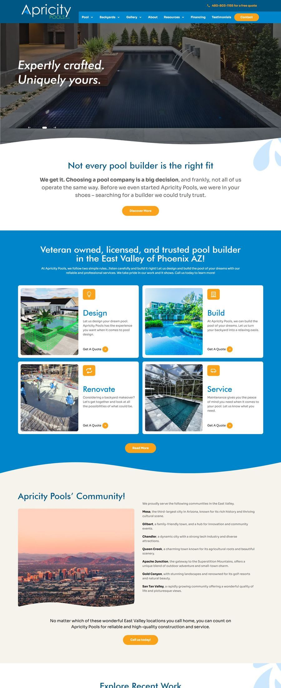

// web-developer.select(clients)
Websites that turn visitors into booked clients.
I'm Zubia — a freelance developer with 8+ years building fast, good-looking sites on WordPress, Shopify, Wix, Webflow and Squarespace for spas, clinics, salons, law firms and local businesses across the US, Australia and Germany.

Built on
// selected-work.render(all)
Real sites, for real clients
Every screenshot below is a live project — hover a window to scroll through the actual page.
// services.list()
What I build
Custom Website Development
WordPress or Shopify builds that are fast, clean, and made to scale with your business — not a stripped-down template.
Conversion-Focused Design
Layouts, calls-to-action, and user flows designed to move a visitor toward booking, buying, or calling — not just looking.
Lead-Generating Landing Pages
Purpose-built pages for a single offer or campaign, engineered around one goal: getting the click.
Workflow Automation
Simplifying the backend of your site — bookings, forms, and follow-ups — so the business runs without you babysitting it.
// process.run()
How a project actually goes
Discovery call
We talk about your business, your customers, and what a website actually needs to do for you — not just look like.
Design & build
I design and develop in the open — you see real progress, not a black box, with checkpoints along the way.
Launch
Tested across devices, connected to your domain, and live — with a walkthrough so you're never locked out of your own site.
Support
Sites need small updates. I stay reachable for tweaks, fixes, and the next phase when you're ready to grow.
// currently
Building for clients across US · Australia · Germany
// experience.log()
- 2023 – PresentFreelance Web & Shopify Developer
- 2022 – 2023Technical Project Lead, Neem.pro
- 2019 – 2022Senior Web Developer, Crystallite Pakistan
- 2018 – 2019WordPress Developer, Just Digital
// about.me
Hey, I'm Zubia.
I turned my love for coding into a full-fledged career. Over the years I've helped businesses — from startups to established brands — build high-converting websites that don't just look good, but actually drive results.
I call myself a web developer, but honestly I do more than that. Think of me as a problem solver, a conversion strategist, and a workflow optimizer, rolled into one. I don't just build websites — I build growth engines: sites designed to generate leads, streamline workflows, and make businesses run smarter.
Based in Pakistan, working with clients across the US, Australia and Germany — I hold a Master's in Project Management from SZABIST and a BS in Computer Engineering from Jinnah University for Women, both in Karachi.
Connect on LinkedIn ↗// contact.send()
Need a website that works for you 24/7?
Drop me a message with a bit about your business — I'll reply with next steps, no obligation.